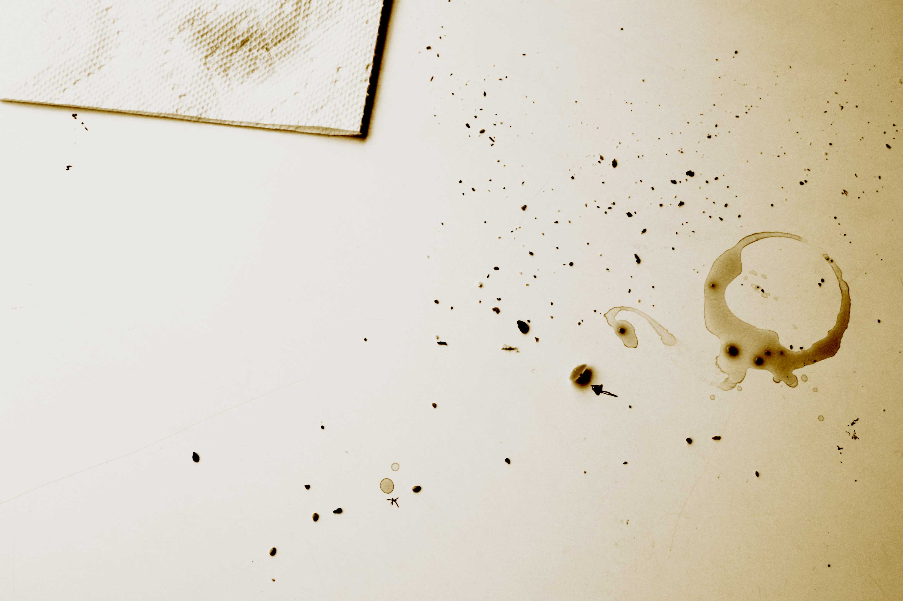

Alan Turing and Claude Shannon encounter took place at the Bell Lab cafeteria, West Village, New York in 1943. The conversation was cordial, unlike some sources later suggested. Bell engineer (and chaperon) Vermont Dahlgren heavedropped on the conversation and and noticed that the two men seemed to be pushing the crumbs of the Victoria Sponge they were eating in a peculiar, yet methodical way, on the table napkin. "It was time to feed cultural things with machines", one said, choregraphying a crumb algorythm or a poetic representation of the universe.
Encryptic schema made by Alan Turring and Claude Shannon, remains of the afternoon tea encounter on table cloth at the Bell cafeteria. Crumbs: Victoria Sponge/ or imported homemade crumpets made for the occasion by Giovani Donato, chef de partie. Tea and coffee mug stains...arrow and asterixis symbol drawn on table cloth. (photograph: Vermont Dahlgren).